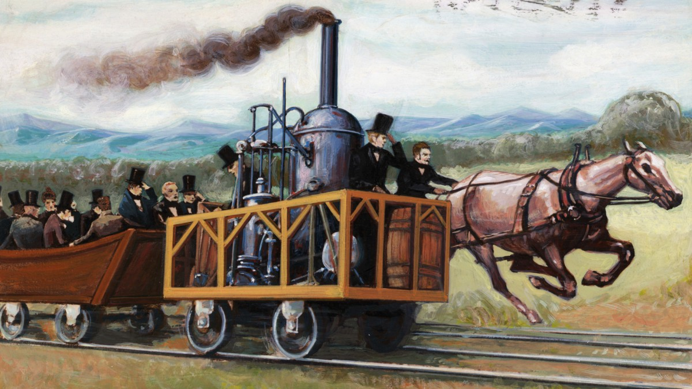

Första industriella revolutionen 1760-1840
Detta är bakgrunden till den industriella revolutionen. Ofta kallar vi den första industriella revolutionen för den egentliga industriella revolutionen. Sedan kommer tre till. Eller så är de tre bara vidareutvecklingar på den första, egentliga, industriella revolutionen. Det beror på vilken historiker du talar med eller vilken historiebok du läser.
Den första industriella revolutionen brukar man räkna mellan ungefär 1760-1840, årtalen kan skilja lite beroende på vad som ses som främsta orsaken, och då var de viktigaste delarna: uppfinnandet av ångmaskinen, byggandet av järnvägar och ånglok samt omvandlingen av sjötransporter från segelfartyg till ångfartyg.
Vi kallar övergången från ett bondesamhälle, som vi hade under medeltiden, till ett samhälle där städer och industrier är viktigast, för "den industriella revolutionen". Var det verkligen en revolution? Ja och nej. En revolution brukar ske hastigt, som den franska revolutionen, men den industriella revolutionen har sin allra första början i romarriket, över 1000 år tidigare. Samtidigt är det en revolution eftersom den förändrade samhället på ett sätt som det aldrig återgick till.